氏族表上
蒙古氏族，凡阿蘭豁阿夢與神遇生三子之後，爲尼而倫派，曰哈特斤氏、薩而助特氏、泰亦兀赤氏、哀而狄干氏、西族特氏、起訥氏、奴牙特氏、兀魯特氏、忙兀特氏、巴鄰氏、蘇哈奴特氏、貝魯剌思氏、黑特而斤氏、札只剌忒氏、布達特氏、都黑拉特氏、貝亦速特氏、蘇嘎特氏、烏而訥兀特氏、亨力希牙特氏。其餘爲都而魯斤派，亦稱塔立斤派［一］，曰都而斤氏、烏梁黑特氏、鴻火拉特氏、亦乞列思氏、呼中氏、速而徒思氏、伊而都而斤氏、巴牙烏特氏、斤特吉氏，皆爲黑塔塔兒。非蒙古人而歸於蒙古者，曰札剌兒氏、蘇畏亦忒氏、塔塔兒氏、蔑兒乞氏、郭而路烏忒氏、衛拉特氏、貝格林氏、布而古忒氏、忽里氏、土斡剌斯氏、秃馬特氏、布而嘎勤氏、格而謨勤氏、忽而罕氏、賽哈亦忒氏，皆爲白塔塔兒。曰烏拉速特氏、帖楞格特氏、客斯的迷氏、林木中烏梁黑氏，皆爲野塔塔兒。蓋拉施特所述蒙古支派如此。今列而序之，參以《秘史》，證其差别，爲《蒙古氏族表》。至色目氏族則以見於史傳者爲據。陶宗儀所稱蒙古七十二種，色目三十一種，舛訛重複，不爲典要，故弗取焉。
哈特斤氏，亦作合塔斤氏，阿蘭豁阿子布哈哈時斤之後，亦作不忽合答吉。以名爲氏。
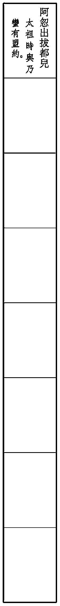
薩而助特氏，阿蘭豁阿子布撒布勒而赤之後，亦作不合秃撒勒吉［二］。亦稱珊竹氏，亦稱散朮台氏，又作散竹台氏。此族與太祖不睦，多被殺。
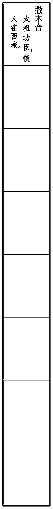
吾也而，亦珊竹氏。
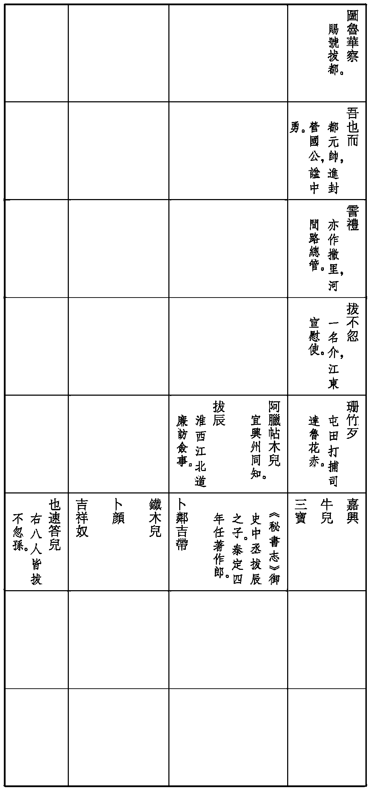
紐璘，亦珊竹氏。
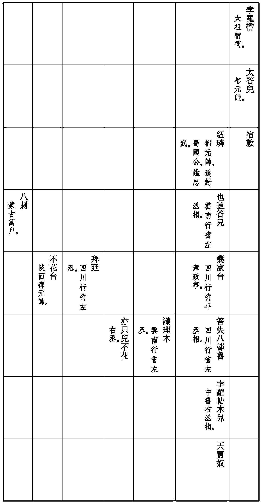
純只海，亦珊竹氏。
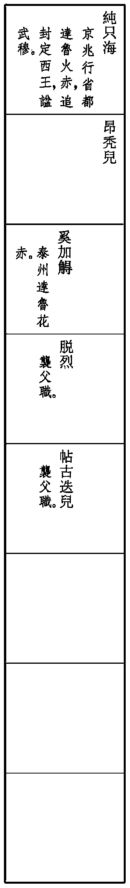
泰亦兀赤氏，海都次子剌剌孩領忽之後。亦作扯而黑林昆。蒙古人相傳布等折兒之孫塔勤爲泰亦兀赤祖［三］，拉施特謂《蒙古金字族譜》泰亦兀赤乃扯而黑林昆之後，譜内有塔勤保護海都免於札剌兒之難，故譌爲塔勤之後云。扯而黑林昆長子獲里哈而圖古起乃、次子合必海汗之後，俱爲泰亦兀赤氏。
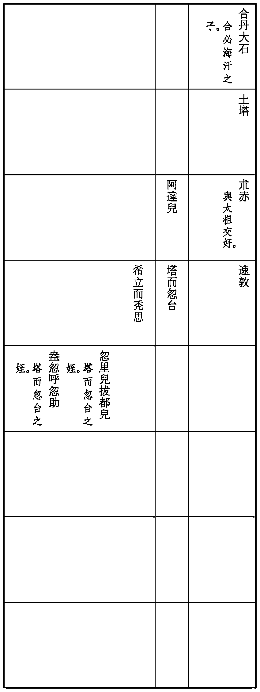
哀而狄干氏，海都幼子昭春之後。
西族忒氏，亦昭春之後。
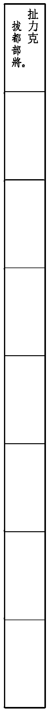
只訥斯氏，亦作起訥氏。扯而黑林昆娶其兄拜星忽兒之妻，生二子，長根都起乃，次烏勒克斤起乃，其後爲只訥斯氏。只訥譯言狼也。亦稱乃古兹氏。
兀魯特氏，亦作兀魯兀台氏。納臣拔都兒生二子，長兀魯兀台，次忙兀台，各以其名爲氏。兀魯兀台之孫曰朮赤台。
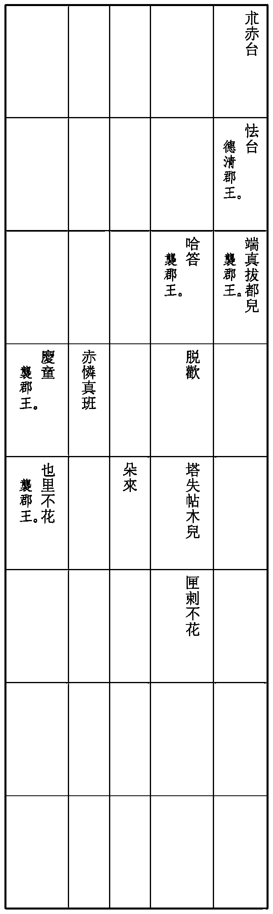
者歹，亦兀魯兀台氏。
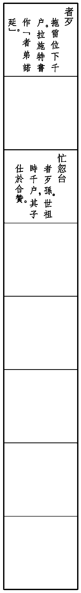
孛罕兀羅帶氏，即兀魯特之異譯。
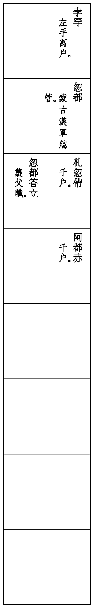
忙兀台氏，忙兀台之後。
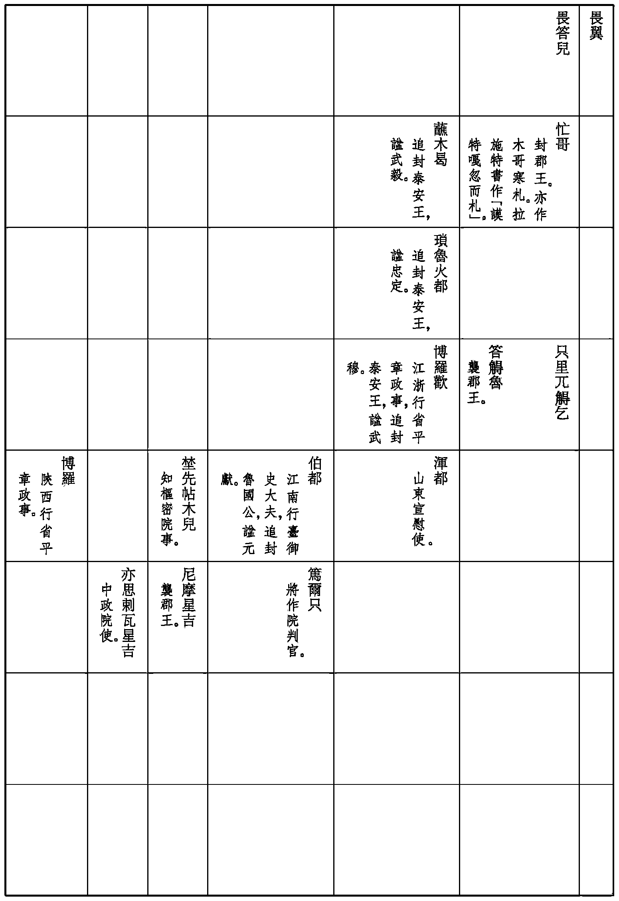
巴鄰氏，亦曰八阿鄰氏，又曰八鄰氏。孛端察兒少子，曰巴阿里歹，其子曰赤都忽勒孛闊，娶婦多生子，亦多後，爲蔑年八鄰氏。蒙古謂多爲「蔑揑」，急讀爲「蔑年」。
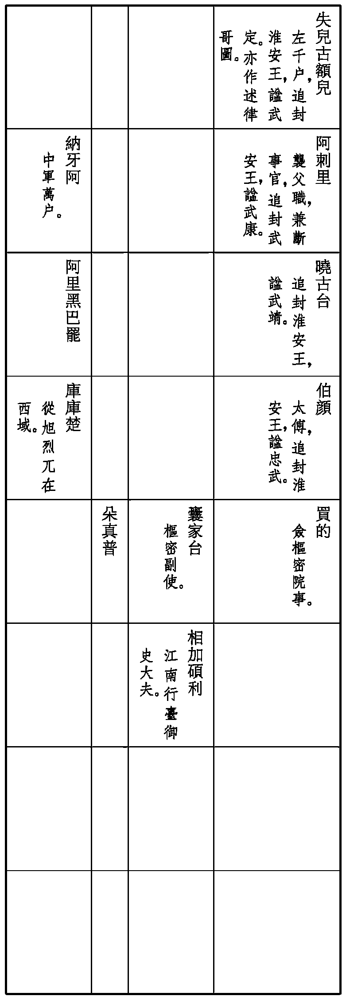
蒙黑兒土而干，亦巴鄰氏。
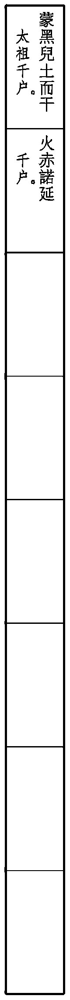
蘇哈奴特氏，與巴鄰氏同祖。兄弟三人，幼者奸一婢而生子，婢畏其妻知，裹以貂裘，藏馬糞中。其父過而見之，知爲己子，與其妻育之，故此子雖爲巴鄰部人，而别稱之曰蘇哈奴特。蒙古擊馬糞之棒曰蘇哈，因以爲名，後以名爲氏。
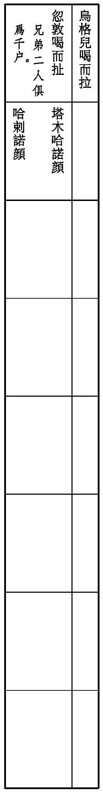
那牙勒氏，亦作奴牙特氏。土默乃汗長子察合蘇之後［四］。亦作葛朮虎。以性情好學官人，名那牙吉歹，其後爲那牙勒氏。察合蘇長子布侖，布侖長子朮赤冶，拉施特因此氏誤爲兀魯特。朮赤冶長子麥兒吉歹，麥兒吉歹長子烏喀必姬，與成吉思汗之子同遊。
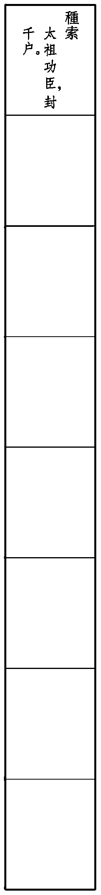
貝魯拉思氏。亦曰八魯剌 氏，又曰巴魯剌思氏。土默乃汗第二子哈出里，亦作合赤兀，又作合産。生子軀幹壯偉，飲啖過人，名曰愛兒敦笠巴魯剌。其後以名爲氏。愛兒敦笠巴魯剌長子曰脱丹，脱丹長子曰朮徹野，朮徹野長子曰攸洛堪哈力赤，與太祖諸子同游。按：舊史《世系表》有大、小八魯剌思。愛兒敦笠巴魯剌，《秘史》作「額兒點圖巴魯剌」。脱丹，《秘史》作「脱朵延巴魯剌」。然則大、小巴魯剌謂愛兒敦笠父子，非兩氏也。
氏，又曰巴魯剌思氏。土默乃汗第二子哈出里，亦作合赤兀，又作合産。生子軀幹壯偉，飲啖過人，名曰愛兒敦笠巴魯剌。其後以名爲氏。愛兒敦笠巴魯剌長子曰脱丹，脱丹長子曰朮徹野，朮徹野長子曰攸洛堪哈力赤，與太祖諸子同游。按：舊史《世系表》有大、小八魯剌思。愛兒敦笠巴魯剌，《秘史》作「額兒點圖巴魯剌」。脱丹，《秘史》作「脱朵延巴魯剌」。然則大、小巴魯剌謂愛兒敦笠父子，非兩氏也。
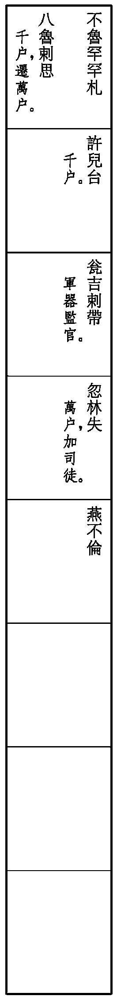
合剌察兒，亦巴魯剌思氏。
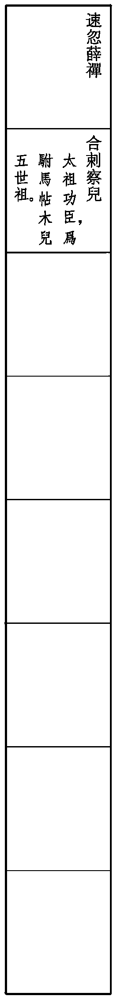
忽必來，亦貝魯剌思氏。
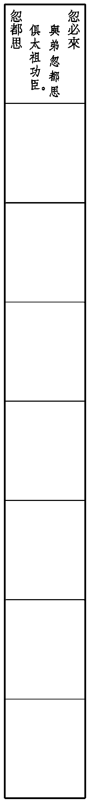
唵木海八剌忽氏。疑即八魯剌。
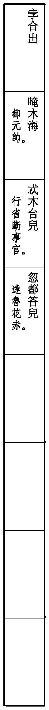
札只剌忒氏，别作朱里牙忒氏，又作札答蘭氏。孛端察兒虜懷孕婦人阿當罕，生子曰札只剌歹，其後以名爲氏。札木合，其部長也。
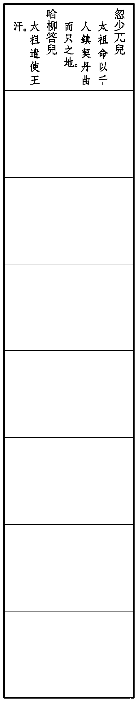
黑得而斤氏。又作阿答兒斤氏。土默乃汗第四子合赤温，又作葛赤渾，生子曰阿答兒蔑兒蔑兒干。其人好爲間諜，故名爲阿答兒斤，遂以爲氏。阿答兒長子那伏袞，那伏袞長子呼古，呼古長子布拉柱，與太祖諸子同游。
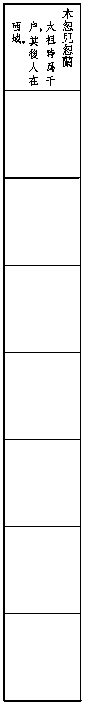
布達特氏。亦作不答阿惕氏。土默乃汗第五子博歹阿庫而根，以争飲啖無禮，故以博歹阿名之，亦作不答阿。遂爲氏。其長子塔力古台，塔力古台長子火力台，火力台長子乞兒吉歹，與太祖諸子同游。
都黑拉特氏。亦作朵豁剌歹氏。納臣拔都兒娶一妻，生子曰失主兀歹，曰朵豁剌歹，因以名爲氏。或曰土默乃汗八子布等哲兒之後。
貝速特氏。亦作别速特氏。孛端察兒五世孫察剌孩領忽有子曰别速台，因以名爲氏。或曰土默乃汗九子勤達貝又作乞牙台。之後，爲别速氏。
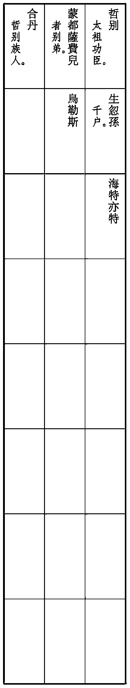
貝住，亦貝速特氏。
戴喀，亦貝速特氏。
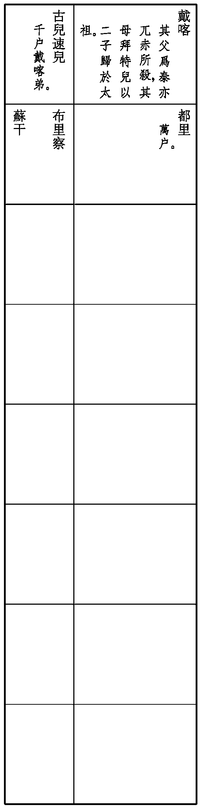
抄兒亦别速台氏，徙汴梁路陽武縣。
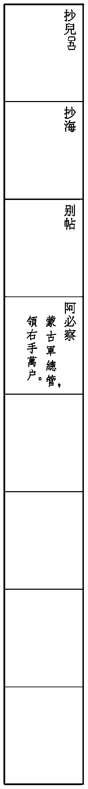
蘇嘎特氏。亦作秃别歹氏，又作秃别亦氏。
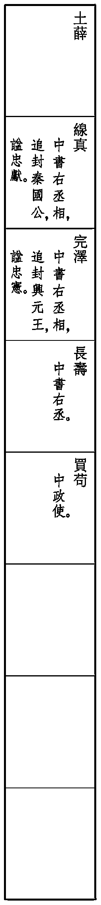
拓拔氏，疑即秃别之轉，借古名譯之。
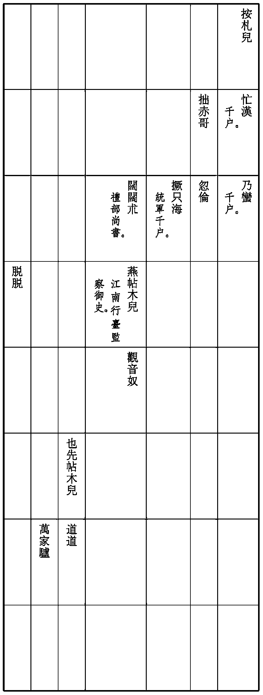
烏而訥兀特氏，亦作烏而惱烏特氏。分三派，一昏乃克喝壇氏，一阿而拉而特氏，一烏而惱烏格楞郭特氏。
昏乃克喝壇氏。亦作晃合丹氏，又作晃豁歹氏，又作晃火壇氏，又作蘇堪斤醋灘氏。抄真斡兒帖該之子都兒魯亦圖行道甚速，鼻孔出聲，因稱晃火壇，後以爲氏。
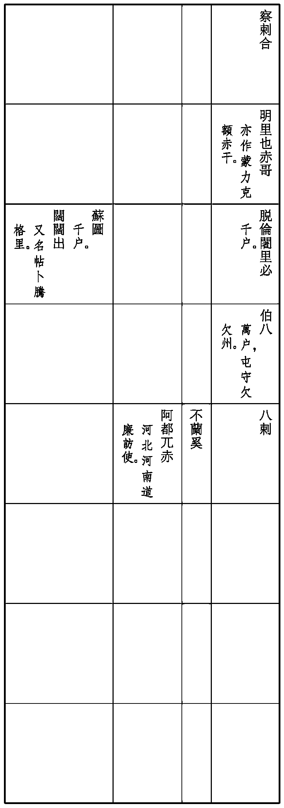
阿而拉特氏，亦曰阿魯剌氏，又作阿兒剌氏，又作阿剌納氏。抄真斡兒帖該之子，以名爲氏。
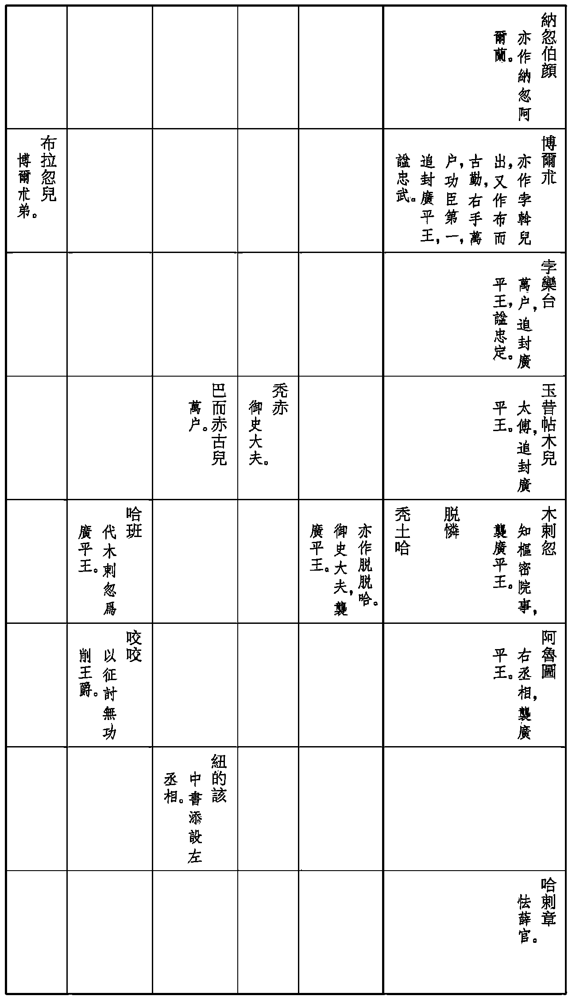
烏而惱烏格楞郭特氏，亦作斡失納兒氏，又曰斡剌納兒氏，又曰斡羅納氏。亦抄真斡兒帖該之子［六］，以名爲氏。
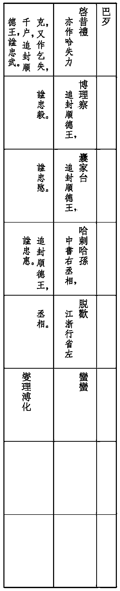
阿朮魯，亦斡剌納氏。
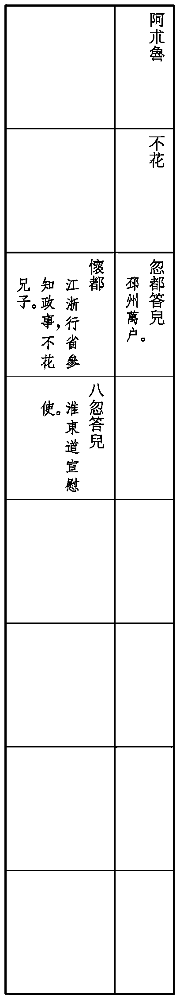
怯怯里斡耳那氏，亦斡羅納之異譯。
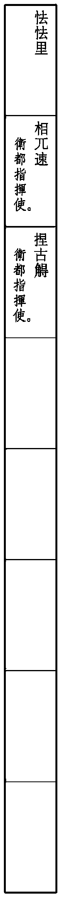
雪你台氏，亦作薛亦氏。抄真斡兒帖該之子，以名爲氏。
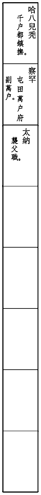
格泥格思氏，亦抄真斡兒帖該之子，以名爲氏。按：雪你台、格泥格思二氏，俱尼而倫派，拉施特書遺之，今補。
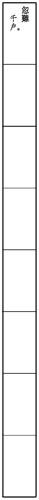
召烈台氏，亦稱沼兀烈亦惕氏，又曰朱牙特氏，又曰竹温台氏。孛端察兒又娶一妻，生子曰合必赤納，其從嫁之婢生子曰沼兀列歹，子孫因以爲氏。按：朱牙特氏，疑即希牙特氏，亦尼而倫派。
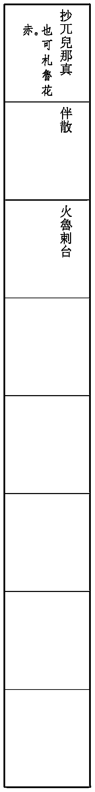
萬家驢竹温台氏。
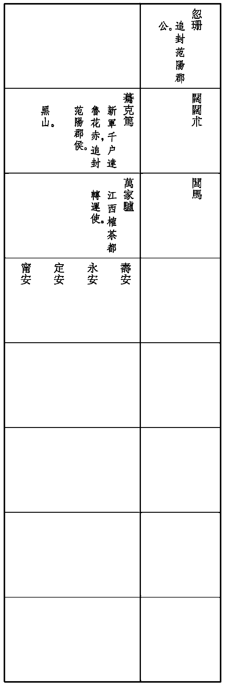
都而班氏，亦曰都而斤氏，又作朵爾邊氏。都蛙鎖豁兒之後，爲塔立斤派。阿蘭豁阿與朵奔蔑兒干所生之二子，長别勒古納台［七］，次不古訥台，亦塔立斤派，其後人無考。
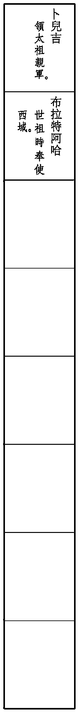
脱脱出度禮班氏，乃都而班之異譯。亦稱朵里别歹氏。
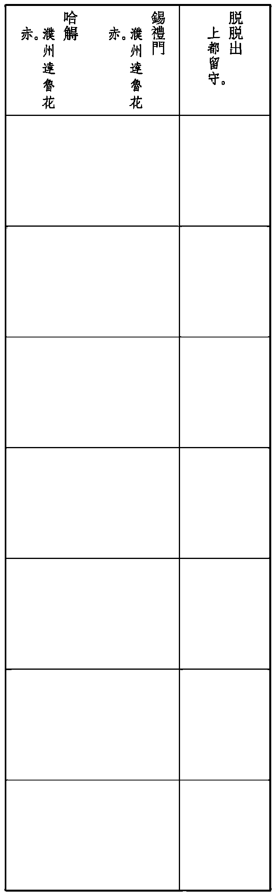
秃里不帶氏，又朵里列歹之異譯。
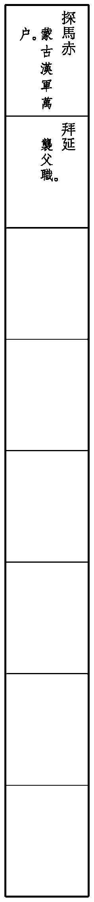
卜領勒多禮伯台氏，多禮伯即朵爾邊之異譯。卜領譯言城，謂有城之地多禮伯氏也。其先脱羅合别吉爲部落盟長，其弟火你赤事太祖，爲副統軍，貴裕其後也。
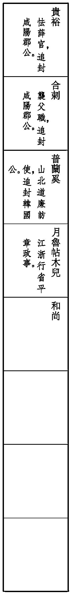
烏梁黑特氏，亦作烏梁海氏，又作兀良合氏，又作兀里養哈兀禮氏。塔立斤派。蒙古俗聞雷聲，則匿於户内不敢出，獨烏梁黑特人聞雷則大呼，欲與雷聲相敵。太祖時有名將者勒蔑速不台。
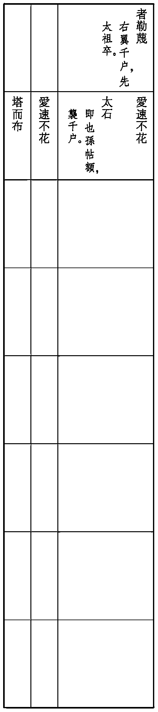
速不台兀良合氏，其先捏里弼與敦必乃汗有舊，生子曰孛忽都。孛忽都之孫曰哲里麻，生子曰合赤温，速不台之祖也。
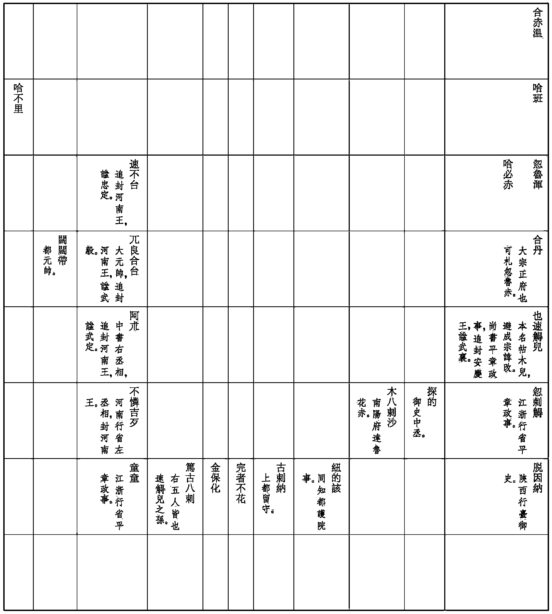
古嘎伊而喀，亦兀良合氏。
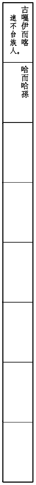
鴻火拉特氏，一作空剌哈特氏，又作瓮吉剌氏，又作宏吉剌氏，又作雍吉列氏。塔立斤派。其嫡祖曰楚而魯忽蔑兒干弟哈拜失米，生二子，長爲盎乞列斯及兀而忽奴特之祖，次楚斯布陶，爲阿拉奴特及鴻格里思約特之祖。長兄與弟不和，欲射之，哈拜失米畏而伏馬腹下，兄憐之，射其耳環，故有蔑兒干之稱。其部居長城之北，近哈剌温山。舊史《特薛禪傳》稱孛思忽兒瓮吉剌氏，孛思即板升之異譯，忽兒即庫倫之異譯，板升譯言屋，庫倫譯言圈子，特因之族，築室以居，稍異游牧之俗，故冠以孛思孛兒，非氏族之名。
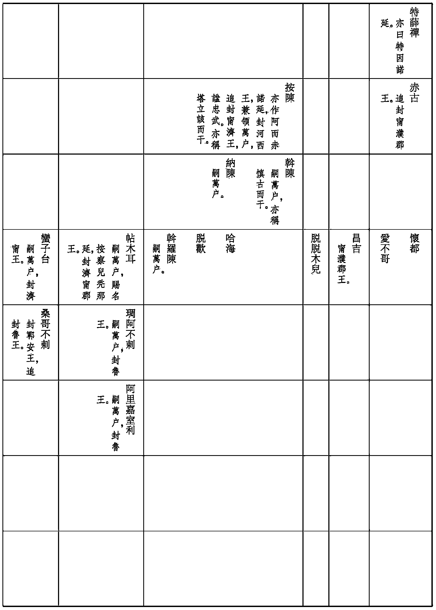
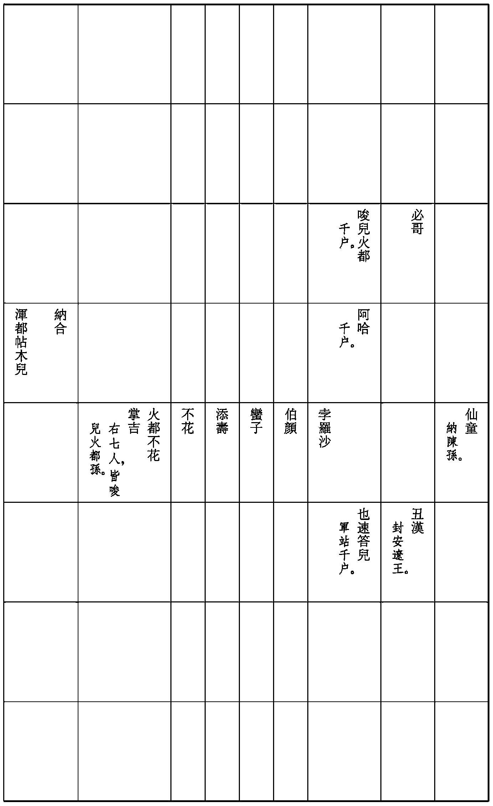
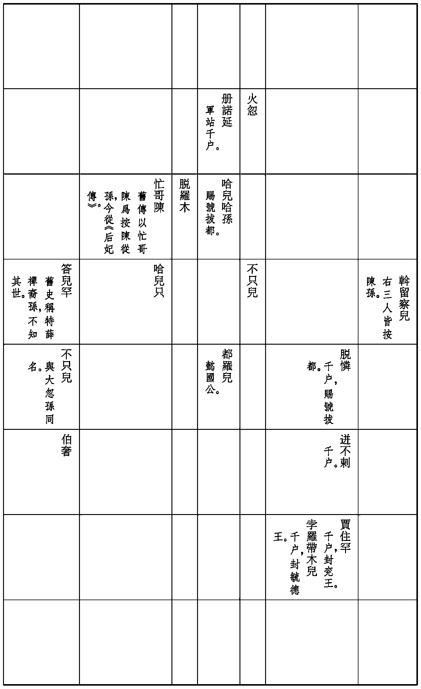
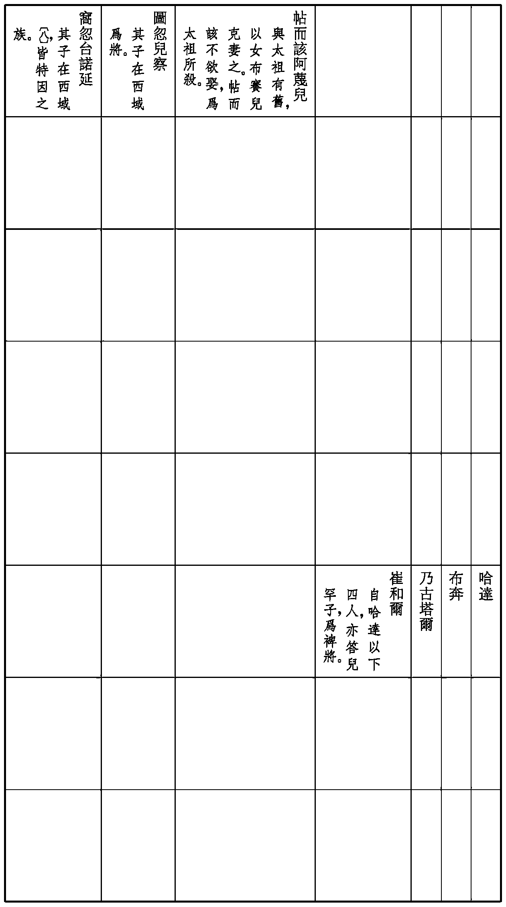
孛蘭奚，亦瓮吉剌氏，居應昌，以后族備太祖宿衛。
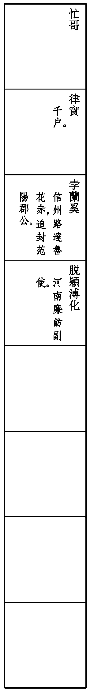
太不花，亦瓮吉剌氏。
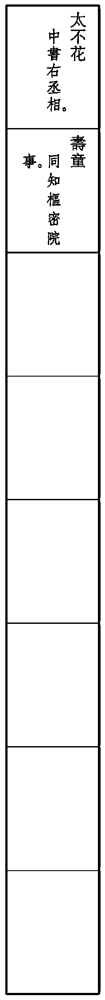
鴻火特拉氏又分五派：一盎姬拉司氏，即盎乞列斯氏。一兀而忽奴特氏，一哈拉諾特氏，即阿拉奴特氏。一呼魯拉斯氏，即鴻格里思氏。一伊而只斤氏。又作伊而都而斤氏。土斯布陶長子爲哈拉諾特氏，呼魯拉斯、亦作火魯剌斯氏。伊而只斤二氏亦土斯布陶之後。伊而只斤爲驢名，其始祖倒海巴婆塔黑娶契丹女騎驢而至，生子以此爲名，其後人在西域多顯者。
兀而忽奴特氏，亦作斡勒忽訥氏。太祖母宣懿太后之族。
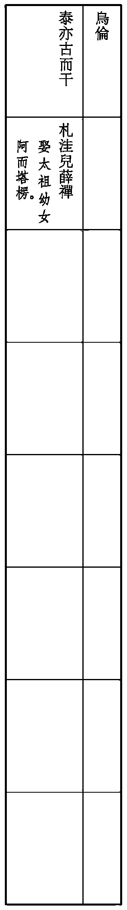
朮臣貝，亦兀而忽奴特氏。
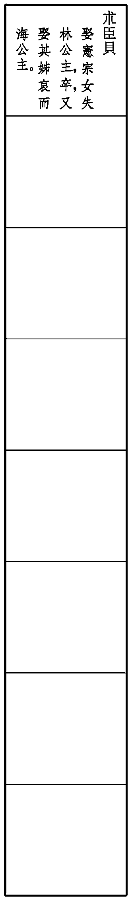
火魯拉斯氏，土斯布陶之後。有豁里剌兒蔑兒干，以捕貂爲業，生女阿蘭豁阿，朵奔蔑兒干娶之。豁里剌兒台蔑兒干居於豁里秃馬敦之阿里黑兀孫，以部内禁捕貂，乃移家於不兒罕山。其子以豁里剌兒爲氏，亦譯作火魯拉斯。
又有竹温台者，以國族爲公主媵臣，冒姓瓮吉剌氏，居全甯路。
亦乞拉思氏，亦曰亦乞列思氏，又曰亦乞列氏。爲鴻吉剌氏之分派，本隸泰亦兀赤部下，後歸附太祖，世爲婚姻。
呼申氏，亦作許兀慎氏，又作旭申氏。塔立斤派。
呼世戴伯忽，亦呼申氏。
速而徒思氏。亦作遜都思氏，又作速勒都孫氏，又作遜都台氏。塔立斤派。
塔海拔都兒，亦遜都思氏。
遜都思氏，見於石刻者有拜住，至正二年進士第一，山東廉訪僉事；見於《秘書志》者有那木罕，泰定元年官秘書郎。
伊而都而斤氏，爲速而徒思之分族。
巴牙烏特氏，塔立斤派，分二族，一札狄亦作者第因。巴牙烏特，住札狄河邊；一格倫亦作計格楞。巴牙烏特，住於沙漠。太祖與泰亦兀赤戰，巴牙烏人助之，稱曰貝古。
格倫巴牙烏氏。
斤吉特氏，塔立斤派。族人無著名者，太祖分其部衆四千人與朮赤，内有忽班諾延。
札剌兒氏，亦作哲來耳氏，又作札剌亦兒。白塔塔兒部族也。太祖第七世祖都答昆與札剌兒人戰，大敗，部衆盡死，惟幼子海都獲免。其後海都滅札剌兒，俘其人爲奴，故孛而只斤氏不與札剌兒通婚姻。札剌兒分十族，一察特，又作札益忒；一塔克拉烏温；一空喀掃温；一枯姆薩烏忒；一烏壓忒；一必而喀敦；一苦培兒；一土朗起忒；一布里；一申苦忒。太祖佐命功臣木華黎爲札益忒札剌兒氏。
撥徹，亦札剌兒氏。
朮赤台兒蔑朱，亦哲來耳氏。合丹，亦哲來耳氏［一二］。
合丹，亦哲來耳氏。
把拉，亦哲來耳氏。
别速兒，亦哲來耳氏。
賽拔，亦哲來耳氏。
唆都，亦札剌兒氏。
塔出，亦札剌兒氏。
奥魯赤，亦札剌兒氏。或云木華黎之近屬。
拜延八都魯，亦札剌兒氏。
脱端，亦札剌兒氏。
潮海，亦札剌兒氏。
蘇畏亦忒氏，白塔塔兒部族也。亦曰蘇尼特氏。分二派，一曰喀伊倫。亦曰喀潑得倫。
塔塔兒氏，亦作答答帶，又作脱脱里台，又作答答里帶。白塔塔兒部族也。分六族，一土黑里均忒，一阿兒哥，一察斤，一古亦辛，一訥札特，一也兒忽依。答答兒六族亦作察合安、阿勒赤、都答兒惕、阿魯孩、阿亦里兀惕、備魯兀惕，譯音不能强合。忽都虎察斤塔塔兒氏。亦作失吉忽都虎。失吉，即察斤之異譯。
忽理、土黑理，均忒塔塔兒氏。
胡土虎特，塔塔兒氏，也速皇后之弟。
賽馬兒古亦辛，塔塔兒氏。
比孫吐哇［一五］，塔塔兒氏。
塔思，答答里氏。
旦只兒，亦答答帶氏。
帖赤，亦答答帶氏。
忒木勒哥，亦答答里帶氏，其先從木華黎將蒙古軍鎮太原以西八州。
脱因納，舊史稱答答乂氏，「乂」疑「歹」字之誤。
脱脱里台氏。亦作脱脱忒氏。
孛兒速，亦脱脱里氏。
按攤脱脱里氏。「按攤」，譯言「金」也，當是塔塔兒降於金者。
蔑兒乞特氏，亦稱蔑兒乞氏，亦曰麥里吉台氏，又曰滅兒吉氏，别名兀都特氏。白塔塔兒部族也。分四族，一畏忽兒，一謨丹，一土塔黑麻，一起庸。按《秘史》蔑兒乞分三種，一兀都亦，一兀洼思，一合阿台，與拉施特書不合。其族人太祖殺之殆盡，惟嬰兒獲免。
伯顔蔑兒乞氏。
闊闊亦蔑里吉氏，世居不里罕哈里敦地，國初舉族内附。
紹古兒，亦蔑里吉氏。
曲列爾，亦蔑里吉氏。一作邁禮吉真氏。
脱脱亦默而吉台氏。
郭而路烏特氏，亦曰朵魯伯氏。白塔塔部族也。其牧地與鴻火剌特伊而只斤貝而忽特相近，不與太祖爲敵，太祖亦善待之。
朵魯伯氏。
衛拉特氏，亦作外剌氏，又曰斡赤剌氏。白塔塔兒部族也。其牧地在郭克苦蘭河，分五族，一哈剌烏孫，一西亦吞，一阿富，一烏角而只，一察干。
貝格林氏［一七］，亦曰梅林氏。其人非蒙古，又非畏兀兒，以語言同，居賽喝次山，亦白塔塔兒十五種之一。
貝而忽忒氏，亦曰布而古忒。與秃馬特同族，白塔塔部族也。分三族，一貝而忽忒氏，一呼里氏，一土斡剌斯氏，其後三族合一。
秃馬特氏，亦作秃别亦氏。白塔塔兒部族也。
布而嘎勤氏、格而謨勤氏，同爲白塔塔兒部族，居巴而忽真土格羅姆之地，族人無著名者。
忽而罕氏、賽哈夷氏，同爲白塔塔部族，助太祖攻泰亦兀赤。
捏古台氏。相傳太祖少時嘗遇侵暴，夜與從者七人至於大石之厓，解帶加領上以爲禮而禱曰：「若有天命，必有來助者。」俄有十九人前來，請自效，是爲捏古台氏。其族有四，一播而祝吾，一厄知吾，一脱和剌吾，一撒哈兒秃。按撒哈兒即賽哈夷之異譯，脱和剌即土斡剌之異譯，播而祝即布而嘎之異譯，然則捏古台氏乃土斡剌、布而嘎、賽哈夷諸族之總名，其後分析，各爲一種耳。
乞奴，播而祝吾捏古台氏。
忽都達兒，亦捏古氏，居雲中。
烏拉速特氏、帖楞郭特氏、客思的迷氏，俱野塔塔兒部族也。知藥性，能治疾病。乞兒吉思叛，三族從之，太祖平乞兒吉思，仍歸附。
烏梁海氏，稱爲林木中烏梁海，以别於塔立斤派。不事游牧，生女，詈之則云嫁與牧羊人，以爲大辱。野塔塔兒部族也。
烏梁海有一族曰虎思斡羅斯，後入於蒙古。
怯烈氏。亦曰克巧亦氏。言語風俗大率類於蒙古，只兒起特、董鄂亦特、土馬烏特、薩起牙、哀里牙特，皆其支派。拉施特書以昔起約特、即薩起牙。哀里堪，即哀里牙。與兀魯特、八鄰等部並舉，亦非蒙古人而入於蒙古者。
鎮海亦怯烈氏，事太宗，爲十七投下之一。
槊只腯魯華，亦怯烈氏。
懷都，亦怯烈氏。
哈散納，亦怯烈氏。
阿剌不花，亦怯烈氏，徙開平。
勗實帶，亦克烈氏。
奇爾氏。伊埒庫們事王汗，爲千户，爲奇爾氏。奇爾亦怯烈之異譯。
拔實凱烈氏，即怯烈之異譯。
凱烈氏，阿思蘭之子孫，别爲蘭氏。
燕只吉台氏。亦作衍只吉氏，又作晏只吉氏。自燕只吉台氏以下均不詳其氏族所出。
阿忽台，亦燕只吉歹氏。
按赤歹氏，亦燕只吉歹之異譯。
徹兀台氏。
伲沃鱗氏。
哈兒柳温台氏，世家朔漠，徙許州長葛縣。
兀速兒吉氏。
察台氏。
束吕糺氏。
直脱兒，蒙古氏。
速哥，蒙古氏。
失里伯，蒙古氏。
也速，蒙古氏。
朵兒不花，蒙古氏。
哈答孫，蒙古氏。
【校勘記】
［一］「塔立斤派」，原作「塔亦斤派」。本書本紀、列傳及本表皆作「立」，不作「亦」，因改。
［二］「不合秃撒勒吉」，「撒」原作「撤」，據清魏源《元史新編》卷六一《表五上》改。
［三］「泰亦兀赤」，原作「泰亦赤兀」，據上文乙正。
［四］「土默乃汗」，原作「上默乃汗」，據上下文改。
［五］「抄兒」，原作「抄海」，據本書卷三九《抄兒傳》改。
［六］「抄真斡兒帖該」，「斡」原作「幹」，據上下文改。
［七］「别勒古納台」，「别」原作「劉」，據本書卷一《序紀》改。
［八］「其子在西域」，「在」字原重，今删重。
［九］「知樞密院事」，「院」原作「兒」，據文意改。
［一〇］「第二子」，原作「第二字」，據文意改。
［一一］「淮東宣慰使」，「使」原作「史」，據文意改。
［一二］「合丹亦哲來耳氏」，疑爲衍文。
［一三］「達魯花赤」，「魯」字原脱，據元代職官名補。
［一四］「達魯花赤」，原作「達魯火花」，據《元史》卷一九五列傳第八十二《忠義三》改。
［一五］「比孫吐哇」，表作「比孫比哇」，「吐」字疑誤。
［一六］「達魯花赤」，「魯」字原脱，據元代職官名補。
［一七］「貝格林氏」，「貝」原作「具」，據本表序改。
［一八］「漁陽縣郡伯」，「縣」字疑衍。
［一九］「諡武敏」，「諡」字原重，今删重。
［二〇］「徽政使」，原作「徵政使」，據本書卷一五一本傳改。
本章完!